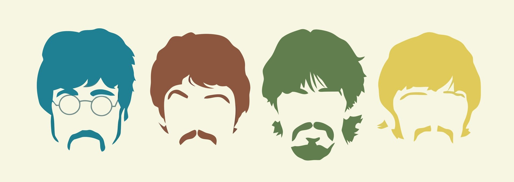
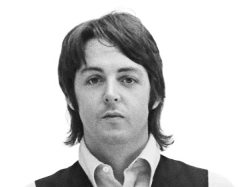
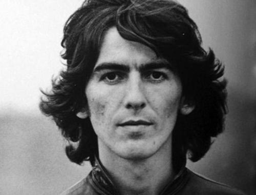
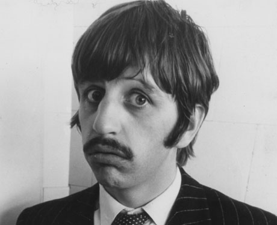
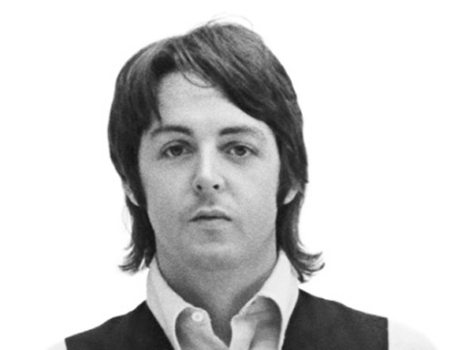
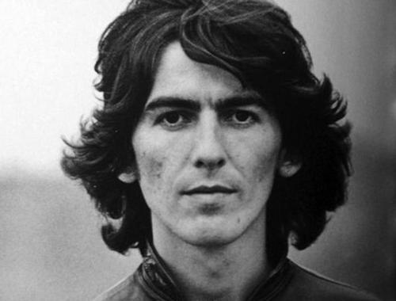
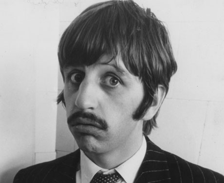
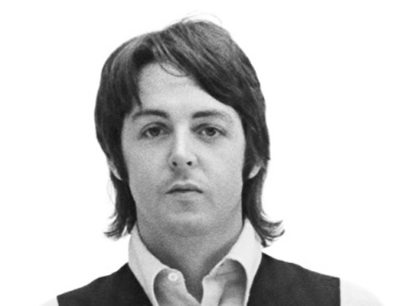
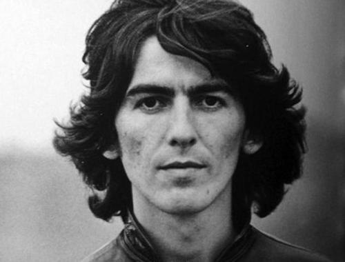
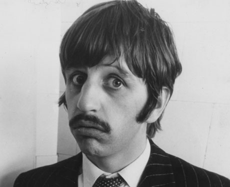

miembros

Miembros:
John Lennon
Paul McCartney
George Harrison
Ringo Star
Antiguos miembros:
Pete Best
Stuart Sutcliffe
 



The Beatles fue una banda de rock inglesa activa durante la década de 1960, y reconocida como la más exitosa comercialmente y críticamente aclamada en la historia de la música popular. Formada en Liverpool, estuvo constituida desde 1962 porJohn Lennon (guitarra rítmica, vocalista), Paul McCartney (bajo, vocalista), George Harrison (guitarra solista, vocalista) y Ringo Starr (batería, vocalista). Enraizada en el skiffle y el rock and roll de los años cincuenta, la banda trabajó más tarde con distintos géneros musicales, que iban desde las baladas pop hasta el rock psicodélico, incorporando a menudo elementos clásicos, entre otros, de forma innovadora en sus canciones. La naturaleza de su enorme popularidad, que había emergido primeramente con la moda de la “Beatlemanía”, se transformó al tiempo que sus composiciones se volvieron más sofisticadas. Llegaron a ser percibidos como la encarnación de los ideales progresistas, extendiendo su influencia en las revoluciones sociales y culturales de la década de 1960.


A los dieciséis años de edad, el cantante y guitarrista John Lennon, influenciado fuertemente por la música de Elvis Presley, creó el grupo de estilo skiffle The Quarrymen junto con algunos compañeros del colegio, en marzo de 1957. Poco tiempo después, en julio del mismo año, Paul McCartney, que por entonces tenía quince años, conoció a Lennon en una fiesta y se unió como guitarrista. Este último invitó a su amigo George Harrison en febrero del año siguiente, el cual, con catorce años, se unió como el guitarrista líder de la formación. En 1960, los compañeros de colegio de Lennon abandonaron la agrupación para ingresar en la Escuela de Arte de Liverpool, haciendo que Lennon y McCartney se encargaran de tocar la guitarra rítmica, aunque les hacía falta alguien que tocase la batería. En enero de 1960, un amigo de Lennon, Stuart Sutcliffe, se unió como bajista y sugirió cambiar el nombre de la banda a “The Beetles” como homenaje a Buddy Holly y The Crickets. En los primeros meses del año el grupo se convirtió en “The Beatals”. Después de probar otros nombres como “Johnny and the Moondogs”, “Long John and The Beetles” y «The Silver Beatles», en agosto se decantaron finalmente por “The Beatles”. La falta de un baterista permanente se planteó en un problema para ellos cuando el gerente no oficial del grupo, Allan Williams, les organizó una reserva en la ciudad alemana de Hamburgo como banda musical residente. A finales de agosto hicieron una audición y contrataron al batería Pete Best, y el quinteto se fue cuatro días más tarde a Hamburgo después de que Bruno Koschmider, dueño de varios clubes en aquella ciudad, les contratara para que tuvieran estancia allí durante 48 noches. “Hamburgo, en aquellos días, no tenía clubes de rock 'n' roll. Había clubes de striptease” cuenta el biógrafo Philip Norman.
Originalmente comenzaron como grupo de estilo skiffle, pero pronto se embarcaron en el rock and roll genuino de los años 50. Conforme pasó el tiempo, su repertorio se fue ampliando hasta incluir una extensa variedad de música pop. Como reflejo de la variedad de estilos que exploraron, Lennon dijo sobre Beatles for Sale: “Podías calificar a nuestro último álbum como un LP de The Beatles de country & western”, mientras que la banda fue acreditada por Allmusic, y en particular Rubber Soul, como una de las principales influencias en el movimiento del género del folk rock. Incorporaron asimismo elementos de música clásica en su música, comenzando con el uso de un cuarteto de cuerda en la canción “Yesterday”, del álbum Help!. Sin embargo, tal y como señaló Jonathan Gould, este no fue “ni remotamente el primer disco pop en hacer uso prominente de cuerdas más bien, ocurrió que el sonido más tradicional de las cuerdas había permitido una nueva apreciación de su talento como compositores por aquellos oyentes que en cierto modo sentían alergia al estruendo de las baterías y las guitarras eléctricas”.
En 1965, la reina Isabel II nombró a los cuatro Beatles miembros de la Orden del Imperio Británico (MBE). La película Let It Be (1970) de The Beatles, ganó un Óscar en 1971 por mejor banda sonora original. The Beatles han recibido 7 premios Grammy y 15 premios Ivor Novello por sus discos. Han sido certificados con 6 discos de diamante, así como 24 discos multi-platino, 39 discos de platino y 45discos de oro en los Estados Unidos, mientras que en el Reino Unido tienen 4 discos multi-platino, 4 discos de platino, 8 discos de oro y 1 disco de plata. El grupo fue admitido en el Salón de la Fama del Rock and Roll en 1988. En 2008, la revista Billboard publicó una lista de los artistas que más vendieron en el Hot 100 para celebrar el quincuagésimo aniversario de la lista estadounidense: The Beatles arrancaron en el puesto número uno. En 2009, la Asociación de la Industria Discográfica de Estados Unidos certificó que The Beatles habían logrado vender más discos en los Estados Unidos que cualquier otro artista. The Beatles han tenido más álbumes número uno en el Reino Unido que cualquier otro artista musical (un total de 15 álbumes), sumando con ello un total de 174 semanas de permanencia en la primera posición de la lista musical. De forma colectiva, fueron incluidos en la recopilación de la revista Time de las 100 personas más influyentes del siglo XX.
,_Hollywood_Boulevard,_'The_Beatles'_--_2012_--_5.jpg)
En junio de 1966 salió a la venta Yesterday and Today, un álbum creado por Capitol Records para el mercado estadounidense. El disco causó gran impacto por su portada, al retratarlos vestidos de carniceros rodeados de piezas de carne y muñecas de plástico mutiladas. Una popular historia, aunque apócrifa, fue que la foto de la portada habría que entenderla como una respuesta satírica al modo que empleó Capitol en masacrar los álbumes originales del grupo. Ante la controversia y escándalo que la portada de este álbum despertó, decidieron cambiarla por una nueva más convencional. Una copia original sin censura fue subastada en 10.500 dólares en diciembre de 2005. Durante una gira por Filipinas, un mes después de que saliera a la venta Yesterday and Today, fueron invitados a un desayuno en el Palacio Presidencial por parte de la primera dama del país, Imelda Marcos. Cuando se presentó la invitación, Epstein la rechazó cortésmente en nombre del grupo, ya que nunca había sido su política el aceptar este tipo de invitaciones oficiales. The Beatles se dieron cuenta pronto de que el régimen de Marcos no estaba acostumbrado a tomar un «no» por respuesta. Como resultado de esto, tuvieron que escapar del país a causa de los disturbios que se habían ocasionado. Al poco tiempo, a punto de comenzar la tercera gira por Estados Unidos, se encontraron con la reacción furibunda de algunos de los religiosos y conservadores de aquel país, debido a un comentario que Lennon había hecho el marzo pasado: en una entrevista con la periodista británica Maureen Cleave, opinó que la religión cristiana estaba por entonces en franco declive, y que The Beatles eran en ese momento más populares que Jesucristo. El comentario pasó prácticamente desapercibido en Inglaterra, pero cuando la revista Datebook la publicó en Estados Unidos, se creó una gran controversia entre los grupos religiosos del sur de Estados Unidos. Al mismo tiempo, ocasionó también que en Sudáfrica el gobierno prohibiera la publicación de grabaciones de The Beatles, acta que se extendió hasta 1971. Epstein criticó públicamente a Datebook, diciendo que habían interpretado las palabras de Lennon fuera de contexto. Finalmente, Lennon tuvo que disculparse públicamente por su comentario en una conferencia de prensa en Chicago el 11 de agosto de 1966.
Poco antes y después de su separación oficial, cada uno de ellos publicó álbumes en solitario, aunque algunos de sus discos contenían contribuciones de los otros miembros.Ringo (1973), de Ringo Starr, fue el único álbum que incluía composiciones e interpretaciones de todos ellos, aunque en canciones grabadas por separado. Harrison mostró su conciencia sociopolítica al arreglar el concierto para Bangladesh en la ciudad de Nueva York en agosto de 1971, junto al maestro del sitar Ravi Shankar, ganando así respeto por su contribución a la ayuda de aquel país, devastado por la guerra (con el consiguiente refugio de una parte de la población al país vecino, la India), y un posterior desastre natural en forma de ciclón. Aparte de un inédito jam session de 1974 (aparecido después en el bootleg A Toot and a Snore in '74), Lennon y McCartney nunca más volvieron a grabar juntos